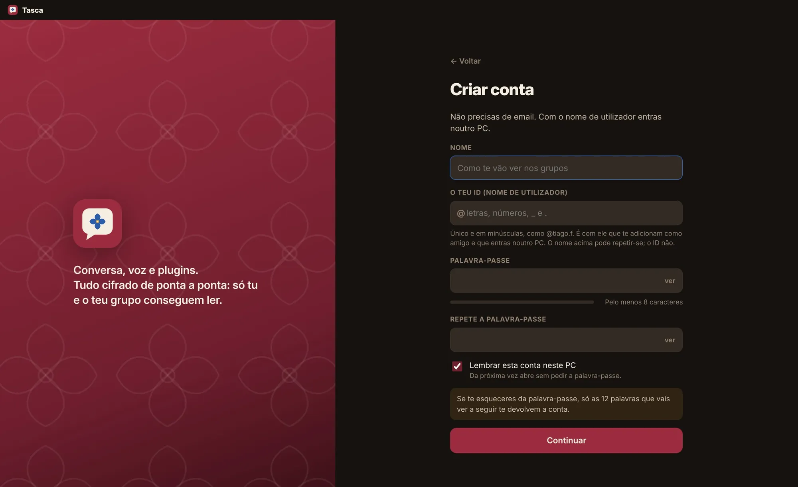
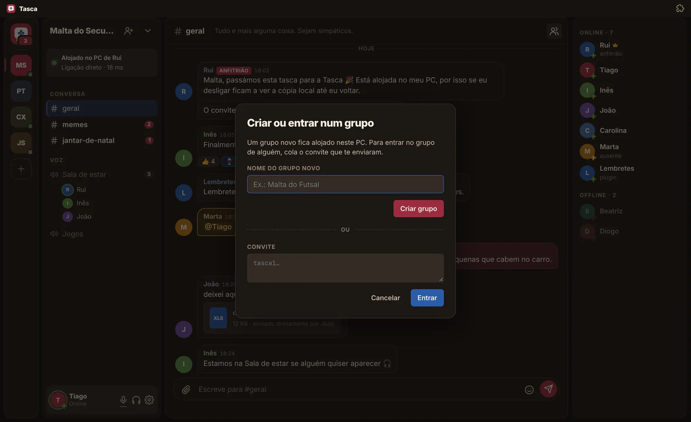
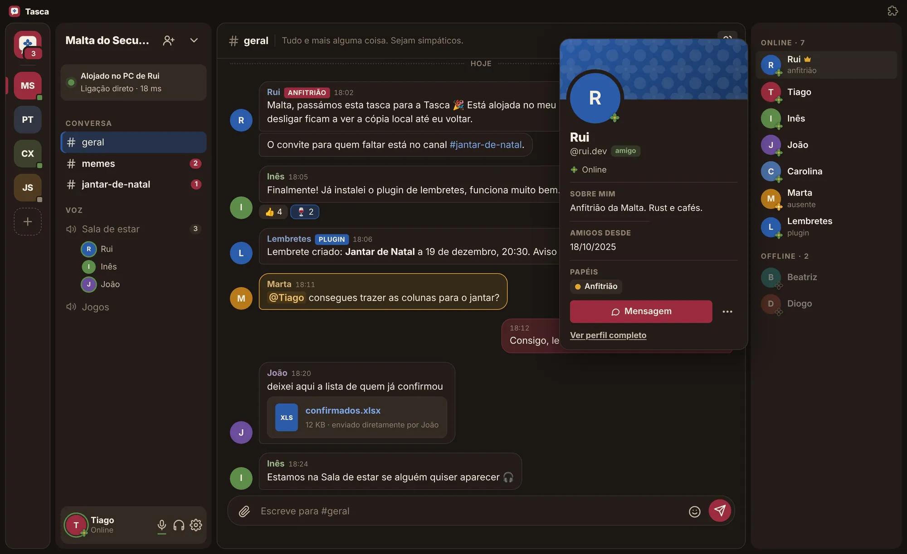
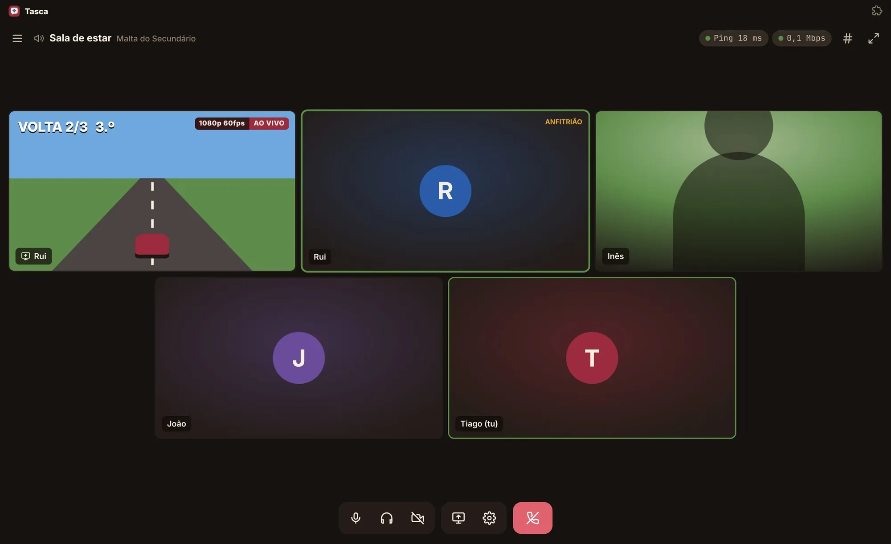
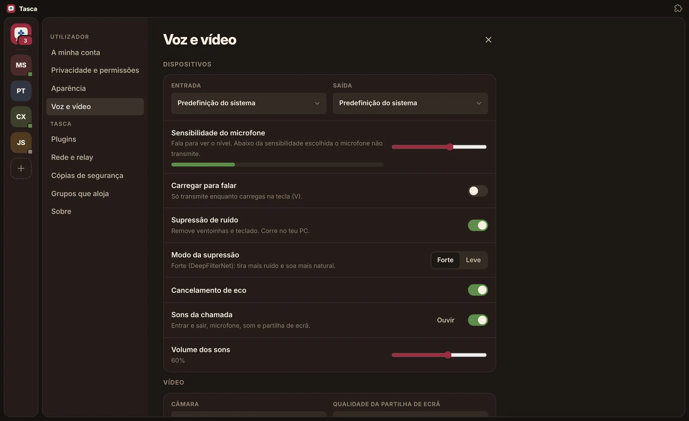
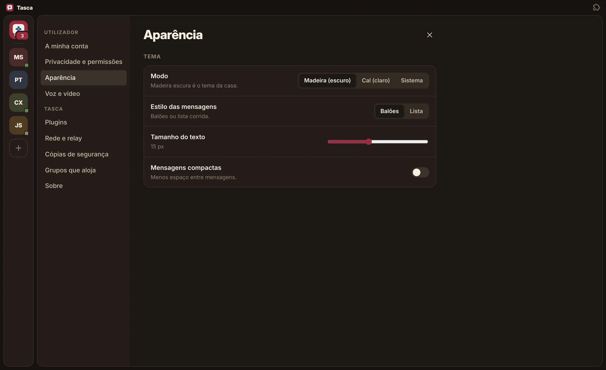
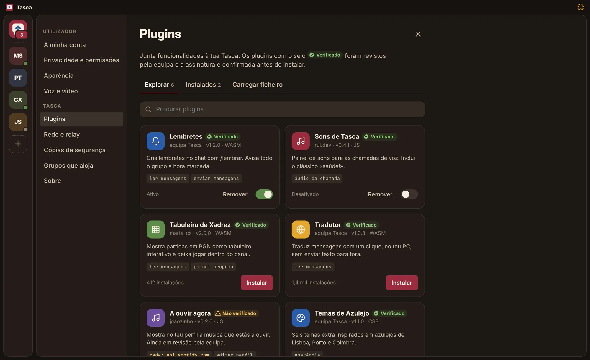
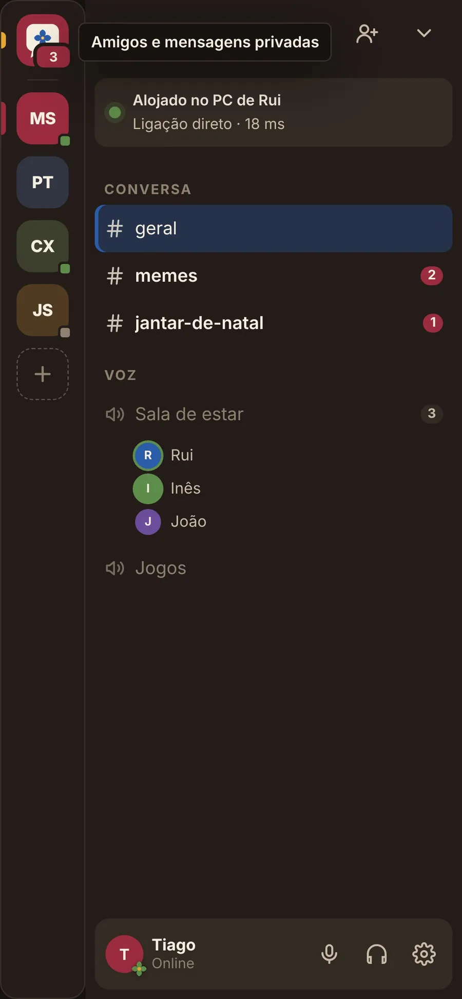

Instalar no Windows
A Tasca funciona no Windows 10 e 11, 64 bits. O instalador instala a Tasca só para o teu utilizador.
- Vai a Descarregar e carrega em Descarregar para Windows. Recebes um ficheiro
Tasca_x.y.z_x64-setup.exe. - Abre o ficheiro. Se o Windows mostrar «O Windows protegeu o computador», carrega em Mais informações e depois em Executar mesmo assim.
- Segue o instalador. No fim, a Tasca abre sozinha.
O que é preciso
- Windows 10 ou 11 (64 bits) com o WebView2, que já vem com o Windows.
- Ligação à internet. Numa rede local também funciona entre PCs da mesma casa.
- Microfone e auscultadores para as chamadas; câmara é opcional.
Onde ficam os dados
As tuas contas, grupos e histórico ficam em %APPDATA%\Tasca. Desinstalar a Tasca não apaga esta pasta, por isso podes reinstalar sem perder nada.
Instalar no Android
A Tasca para Android é a mesma app do PC, adaptada ao telemóvel. Precisa do Android 8 ou mais recente.
- No telemóvel, abre Descarregar e carrega em Descarregar para Android. Recebes o ficheiro
Tasca.apk. - Abre o ficheiro. O Android pergunta se permites instalar apps desta fonte (do browser ou do gestor de ficheiros). Permite e volta atrás.
- Carrega em Instalar.
Para atualizar, a Tasca avisa quando há uma versão nova e descarrega-a por ti; só tens de confirmar a instalação. Também podes ir a Definições > Sobre > Procurar atualizações.
Criar a conta
Não precisas de email nem de número de telefone. A tua conta é um par de chaves criado no teu dispositivo e protegido pela tua palavra-passe.

- Abre a Tasca e carrega em Criar conta.
- Nome: como te vão ver nos grupos. Podes repeti-lo e mudá-lo depois.
- O teu ID: o teu nome de utilizador único, como
@tiago.f. É com ele que entras noutro dispositivo e que os amigos te adicionam. Só letras minúsculas, números,_e., entre 3 e 24 caracteres. Se já existir, a Tasca sugere alternativas. - Palavra-passe: pelo menos 8 caracteres. Uma frase comprida é mais segura e mais fácil de lembrar.
- Lembrar esta conta neste PC: a Tasca abre já desbloqueada da próxima vez. A chave fica no cofre do Windows.
- Carrega em Continuar, guarda as 12 palavras e aceita os termos e regras.
As 12 palavras de recuperação
Quando crias a conta, a Tasca mostra 12 palavras em inglês. São a única forma de recuperar a conta se perderes a palavra-passe ou o dispositivo.
- Escreve-as em papel, pela ordem, e guarda-as num sítio seguro. No PC também as podes guardar num ficheiro
.txtno ambiente de trabalho. - A Tasca pede-te para confirmares algumas palavras, para ter a certeza de que as guardaste.
- Nunca as envies a ninguém. Quem as tiver, fica com a tua conta.
Entrar e recuperar a conta
Entrar noutro PC ou no telemóvel
Carrega em Entrar e escreve o teu @ID e a palavra-passe. A tua conta, cifrada, vem do servidor de contas e é aberta no dispositivo. Amigos, grupos e perfil passam para o dispositivo novo.
Esqueci-me da palavra-passe
- No ecrã de entrar, carrega em Usar as 12 palavras de recuperação.
- Escreve as 12 palavras pela ordem, separadas por espaços.
- Escolhe uma palavra-passe nova.
Entrar com Google
Se ligaste a conta ao Google, a Tasca guarda uma cópia cifrada numa pasta privada dela no teu Google Drive. Ela só tem acesso a essa pasta, não aos teus ficheiros.
Várias contas
Carrega no teu nome, no canto de baixo, e escolhe Trocar de conta ou Sair da conta. O ecrã «Escolhe a conta» mostra todas as contas que já entraram neste dispositivo.
Criar um grupo
Um grupo é como uma casa: tem canais de texto e de voz, membros e um anfitrião.

- Na barra da esquerda, carrega no +.
- Escreve o nome do grupo, por exemplo «Malta do Futsal», e carrega em Criar grupo.
O grupo fica alojado no teu PC: tu és o anfitrião. Lê Ser anfitrião para perceberes o que isso significa.
Convidar pessoas e entrar num grupo
Convidar
- Abre o grupo e carrega no ícone de Convidar pessoas, ao lado do nome do grupo.
- A Tasca cria um código que começa por
tasca2. Carrega em Copiar convite e envia-o por onde quiseres.
O convite expira ao fim de 7 dias. Funciona mesmo com o PC do anfitrião desligado.
Entrar com um convite
- Carrega no + na barra da esquerda.
- Cola o convite na caixa Convite e carrega em Entrar.
Canais e categorias
Os canais de texto (#) são para escrever; os canais de voz (🔊) são salas onde entras e sais quando quiseres. As categorias agrupam canais, e um canal de texto e um de voz podem estar na mesma categoria.
Criar e editar (anfitrião)
- Carrega no + ao lado de uma categoria para criar um canal nela.
- Carrega com o botão direito num canal para editar, duplicar, mover para outra categoria, copiar o ID ou apagar.
- Carrega na roda dentada de uma categoria para lhe mudar o nome ou a apagar.
- Arrasta canais e categorias na lista para os ordenar.
Notificações de cada canal
No menu do grupo (seta ao lado do nome) escolhes se queres ser avisado de todas as mensagens ou só de menções. Com o botão direito num canal podes marcar como lido; no grupo, marcar tudo como lido.
Ser anfitrião
O anfitrião é quem criou o grupo e manda nele. O grupo não depende do PC dele: mensagens, canais, cargos e convites funcionam com o anfitrião desligado.
Saber se o anfitrião está ligado
Por baixo do nome do grupo aparece onde está alojado e como estás ligado: direto (o melhor), via relay (quando o router não deixa ligar direto) ou este PC (és tu). Ao lado, o ping em milissegundos.
Se o anfitrião desligar o PC, o grupo continua igual para toda a gente. As chamadas ficam no PC de quem entra primeiro na sala.
Dicas para anfitriões
- Liga Abrir com o Windows em Definições > Privacidade e permissões, para o grupo estar disponível sempre que o PC está ligado.
- Em Definições > Grupos que aloja vês os teus grupos, quantos membros têm e quanto ocupam.
Passar o grupo a outra pessoa
Vais mudar de PC ou queres que outra pessoa fique com o grupo? Em Opções do grupo > Transferir propriedade, ou com o botão direito numa pessoa > Passar o grupo para….
Assinas a transferência, a outra pessoa aceita, os dados vão cifrados para o PC dela e só depois de confirmados é que deixas de ser anfitrião.
Mensagens
- Enter envia; Shift + Enter muda de linha.
- Escreve
@e o nome para mencionar alguém. A mensagem fica destacada para essa pessoa. - O botão 😊 abre os emojis. Passa o rato numa mensagem para reagir.
- O clipe anexa um ficheiro, que vai diretamente para os PCs dos membros.
- Se uma mensagem não chegar ao anfitrião, aparece um aviso com Tentar enviar outra vez.
As mensagens são cifradas de ponta a ponta e assinadas por quem as escreveu. Ficam numa cópia em cada membro e, cifradas, na caixa do grupo no servidor, por isso chegam a todos mesmo com o anfitrião desligado.
Amigos

Carrega no logótipo da Tasca, no topo da barra da esquerda, para abrir Amigos e mensagens privadas.
- Adicionar amigo: escreve o @ID da pessoa. Também podes carregar com o botão direito em alguém de um grupo.
- Pedidos: os que recebes e os que enviaste, até alguém responder.
- Bloquear: quem bloqueares não te consegue pedir amizade nem ver se estás online.
Mensagens privadas
Abre o perfil de alguém e carrega em Mensagem, ou escolhe Enviar mensagem no menu do botão direito. A conversa é só entre os dois, cifrada de ponta a ponta, e aparece em todos os teus dispositivos.
Em breve Chamadas de voz e vídeo a dois, diretamente entre os dois PCs.
Perfil e estado

Editar o perfil
Carrega no teu nome em baixo > Editar perfil: muda o nome, a foto, a cor do azulejo e o «Sobre mim».
Estado
- Online: toda a gente vê que estás cá.
- Ausente: fica assim sozinho depois de 10 minutos sem mexer.
- Não incomodar: sem notificações nem sons de mensagens.
- Invisível: usas a Tasca, mas apareces offline.
O menu de cada pessoa
Botão direito numa pessoa: ver o perfil, mencionar, enviar mensagem, ajustar o volume só para ti, silenciar, adicionar ou remover amigo, bloquear e copiar o ID.
Chamadas de voz

- Carrega num canal de voz (🔊) para entrar. Quem lá está aparece por baixo do canal.
- Na barra de baixo tens: microfone, som (deixas de ouvir e de ser ouvido), câmara, partilhar ecrã, definições e sair.
- O # no topo abre o chat do grupo sem sair da chamada; o ícone ao lado põe a chamada em ecrã inteiro.
No topo vês o ping e quanto estás a enviar. A voz usa o codec Opus e passa pelo anfitrião, que a reencaminha para os outros.
Microfone e supressão de ruído

- Dispositivos: escolhe o microfone e os auscultadores, e carrega em testar.
- Sensibilidade: fala para ver o nível. Abaixo da linha escolhida o microfone não transmite.
- Carregar para falar: só transmite enquanto carregas em V.
- Supressão de ruído: tira ventoinhas, teclado e barulho de fundo. Corre no teu PC, nada sai dele.
- Forte (DeepFilterNet): tira mais ruído e soa mais natural.
- Leve (RNNoise): gasta muito pouco, bom para PCs mais fracos.
- Sons da chamada: entrar e sair, microfone, som e partilha de ecrã, com o volume que quiseres.
Câmara e partilha de ecrã
Câmara
Dentro de uma chamada, carrega no botão da câmara. Escolhe qual câmara usar em Definições > Voz e vídeo. Carrega com o botão direito numa pessoa para não ver o vídeo dela e poupar dados.
Partilhar o ecrã
- Carrega em Partilhar ecrã e escolhe o ecrã inteiro ou uma janela.
- Para parar, carrega outra vez no botão ou em Parar partilha.
Liga Usar a placa gráfica para codificar (NVENC, AMF ou Quick Sync) para partilhar jogos sem pesar no processador.
Aparência

- Modo: Madeira (escuro, o tema da casa), Cal (claro) ou igual ao sistema.
- Estilo das mensagens: balões ou lista corrida.
- Tamanho do texto e mensagens compactas.
Privacidade e permissões
Em Definições > Privacidade e permissões decides o que a Tasca pode usar. Desligar aqui desliga mesmo.
- Microfone: desligado, entras nas chamadas só a ouvir.
- Câmara: desligada, o botão da câmara fica bloqueado.
- Notificações: avisos de mensagens e menções com a Tasca em segundo plano.
- Abrir com o Windows: a Tasca abre minimizada quando ligas o PC.
O Windows também tem permissões próprias: se o microfone não funcionar, vê Resolver problemas.
Rede e relay
A Tasca tenta sempre ligar os PCs diretamente. Quando não dá (alguns routers, CGNAT da operadora, firewalls), o tráfego passa por um relay. O relay só vê dados cifrados e não consegue ler nada.
Em Definições > Rede e relay vês o estado da ligação e podes testar o relay.
Cópias de segurança Em breve
Para quem aloja grupos: a Tasca vai fazer cópias automáticas dos grupos, comprimidas e cifradas com uma palavra-passe só tua, para o Google Drive, o OneDrive ou uma pasta à tua escolha. Só envia o que mudou desde a última cópia.
Até lá, cada membro guarda uma cópia do histórico, e a pasta %APPDATA%\Tasca pode ser copiada à mão.
Plugins Em breve

A loja de plugins vai estar em Definições > Plugins (ou no ícone da peça de puzzle, no canto de cima). Os plugins com o selo Verificado são revistos e assinados pela equipa. Cada plugin só tem as permissões que aceitares.
Queres fazer o teu? Vê o guia para criar plugins.
Atualizações
No Windows, a Tasca procura atualizações sempre que abre e instala-as sozinha, sem janelas. No Android, avisa e descarrega a versão nova; só tens de confirmar.
Para procurar à mão: Definições > Sobre > Procurar atualizações. O que mudou em cada versão está em Novidades.
PC e telemóvel na mesma conta

- Entra no telemóvel com o mesmo @ID e palavra-passe. Amigos, grupos e perfil aparecem sozinhos.
- As mensagens que escreves num dispositivo aparecem logo no outro.
- Os teus grupos continuam a viver no PC. Com o PC desligado, o telemóvel mostra a cópia local e o que escreves vai pela caixa do grupo.
- Grupos e canais estão na gaveta: botão ☰ ou desliza da esquerda. O botão de voltar do Android fecha menus e janelas.
Ainda não funciona no Android
- Partilha de ecrã.
- Notificações com a app fechada: o Android suspende a app pouco depois de saíres dela.
- Criar grupos (cria-os no PC).
Atalhos de teclado
| Tecla | O que faz |
|---|---|
| Enter | Enviar a mensagem |
| Shift + Enter | Nova linha na mensagem |
| V (manter) | Falar, com «Carregar para falar» ligado |
| Esc | Fechar janelas, menus, definições e o ecrã inteiro |
| Botão direito | Menu de pessoas, canais, categorias e campos de texto |
Resolver problemas
O Windows não deixa instalar
Carrega em Mais informações e depois em Executar mesmo assim. Se o antivírus bloquear, descarrega outra vez da página oficial e permite o ficheiro.
Não consigo entrar na conta
- Confirma o @ID (sem espaços) e a palavra-passe, com atenção às maiúsculas.
- Se a Tasca disser que não consegue ligar ao servidor, mostra um diagnóstico (DNS, ligação, HTTPS). Experimenta outra rede, como os dados do telemóvel.
- Esqueceste-te da palavra-passe? Usa as 12 palavras.
Não consigo entrar num grupo
- Verifica a ligação à Internet.
- O convite pode ter expirado (dura 7 dias). Pede um novo.
- Copia o convite inteiro, a começar por
tasca2. Os convites antigos (tasca1) já não servem.
Ninguém me ouve
- Vê se o microfone não está desligado na barra da chamada.
- Em Definições > Voz e vídeo, escolhe o microfone certo e fala para ver o nível. Baixa a sensibilidade se for preciso.
- Em Definições > Privacidade e permissões, confirma que o microfone está ligado.
- No Windows: Definições > Privacidade e segurança > Microfone, e permite o acesso às apps de ambiente de trabalho.
A voz corta ou tem atraso
Vê o ping no topo da chamada. Se a ligação for «via relay», o router não deixa ligar direto: ativar UPnP no router costuma resolver. Uma ligação por cabo também ajuda. Em PCs fracos, muda a supressão de ruído para Leve.
O Android não instala o APK
- Permite «Instalar apps desconhecidas» para o browser ou o gestor de ficheiros que usaste.
- Se disser que a app não é compatível com a versão instalada, desinstala a Tasca e instala outra vez.
Outro problema?
Vê as perguntas frequentes ou reporta o problema no GitHub, com a versão da Tasca (Definições > Sobre) e o que estavas a fazer.